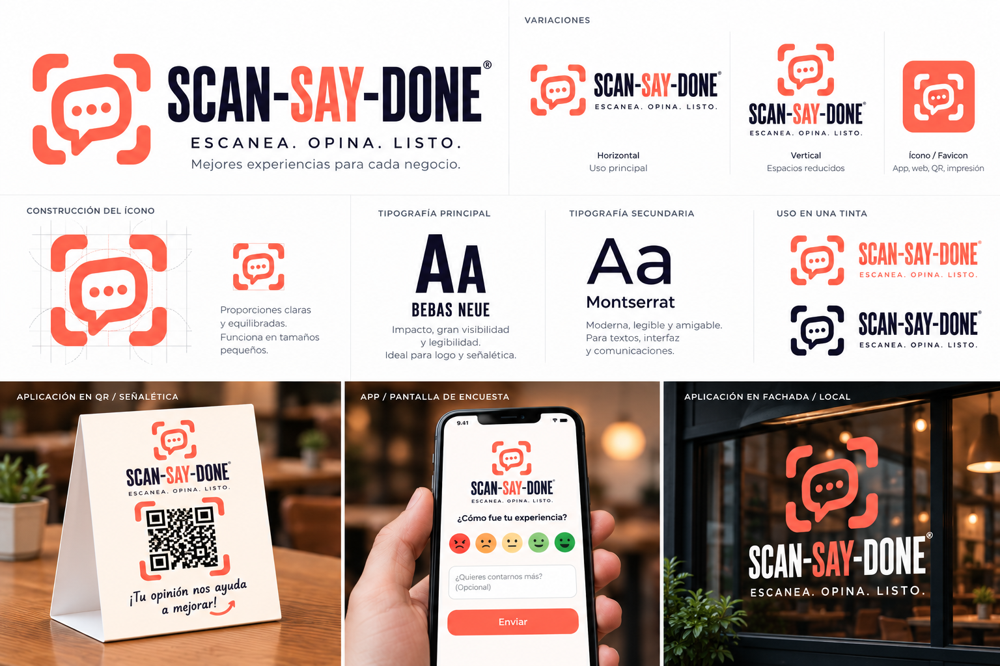

00
Sistema de grid — referencia general
12 col · gutter 24 · bp sm→xxl · xxl 1320 → col 88
opendesign/ · revisión interna · 2026-10-27
13 planos de grid medibles (9 landing + 4 panel) en SVG, fuente de verdad métrica · 12 mockups de alta fidelidad (referencia visual) · índice documental · lámina de marca.
Referencia de diseño. No es la landing construida ni contenido final.
13 planos SVG sobre lienzo 1440 × H (el móvil del panel,
390 × 844), capas band · grid-12 · container · content · measure,
cotas en px (GRID-SPEC §4). Formato de la línea de medidas:
bp · container · col · fila. Cerrar imagen = SVG a tamaño completo. Fórmulas del
landing: col=(C−264)/12 · span(n)=n×col+(n−1)×24; los 4 planos del
panel llevan su propia retícula (ver su subgrupo al final de la sección).
12 col · gutter 24 · bp sm→xxl · xxl 1320 → col 88
xl 1140 · col 73 · row 7+5 = 655/461
xl 1140 · col 73 · 3 × 364
xl 1140 · col 73 · 4 × 267
xxl 1320 · col 88 · frame span-8 = 872 × 545 (16/10)
xl 1140 · col 73 · 3 × 364
lg 960 · col 58 · row 7+5 = 550/386
xl 1140 · col 73 · 4 × 267
xl 1140 · col 73 · 3 × 364 · marcos 4/3 364 × 273
El área de contenido del panel no reusa los containers del landing.
Desktop a 1440: sidebar 264 · C 1128 · col 72 (gutter 24; KPI 4×264+3×24=1128).
Móvil a 390: contenido 358 · col 15.17 (gutter 16; span-6=171 exacto).
Dataset demo único d01–d04; n<10: solo absolutos, cero porcentajes. Fuente:
DASHBOARD-UX §1.
C 1128 · sidebar 264 · col 72 · KPI 4 × 264 · barras 7 × 64 gap 31
C 1128 · sidebar 264 · col 72 · fila 16+96+24+668+24+140+24+120+16
C 1128 · sidebar 264 · col 72 · 360 + 24 + 744 = 1128
contenido 358 · col 15.17 · span-6 = 171 (171+16+171) · alerta 148 · botón 326 × 48
12 mockups generados con wan-image el 2026-10-27
(registro y QA: mockups/INDEX.md; estado por imagen también en
AUDITORIA-IMAGENES.md). Sirven para validar jerarquía, densidad y
ritmo; sus píxeles no corresponden a ningún gutter ni span (GRID-SPEC §5), no
son fuente de medidas ni de copy, y ninguna es contenido final. M1–M8: lote original (05 y 08
verificados además con análisis visual el 2026-10-27); M9–M12: lote del panel. Cerrar imagen =
PNG original.
1536 × 864 px · 871 KB · qwen-image-3.0-pro
referencia con defectos de contenido
Defectos: marca mal escrita («EncuetaQR») · estrellas de satisfacción (prohibidas, contrato §5) · claim falso «+10 000 empresas». Aprobada solo como layout.
1024 × 1536 px · 1.6 MB · wan2.7-image-pro
referencia con defectos de contenido
Defectos: marca inventada «FeedbackLive» · precios falsos ($8/$29) · microcopy ilegible. Las secciones del plan, en orden: útil como wireframe de alta fidelidad, no usar su copy.
1536 × 864 px · 1.6 MB · wan2.7-image-pro
referencia con defectos de contenido
Defectos: estrellas en cada opinión · badges «Positivo» y «Negativo» simultáneos en la misma fila · datos inventados. Estructura aprobada: 4 KPI, 1 gráfico, 1 sola alerta.
864 × 1536 px · 739 KB · qwen-image-3.0-pro
referencia válida
La mejor del lote: texto correcto y legible, un solo CTA. Desviación menor: caras sin número 1–5 bajo cada una.
1536 × 864 px · 744 KB · qwen-image-3.0-pro
referencia con defectos de contenido
Sin estrellas, sin precios, texto legible (análisis visual 27-oct). Defectos: inventa un canal «Tienda en línea / Web» y usa etiquetas genéricas («Mensajería directa») — el plan es mostrador QR, Instagram, WhatsApp y TikTok LIVE (ver R1).
1536 × 864 px · 1.4 MB · wan2.7-image-pro
referencia con defectos de contenido
Defectos (R4): features fuera del MVP — «análisis de sentimientos», «API completa», «SLA». Precio como placeholder: correcto, sin cifras inventadas.
1536 × 864 px · 608 KB · qwen-image-3.0-pro
referencia con defectos de contenido
Defecto (R3): el paso 2 usa chips de multi‑opción; la decisión del plan son 3 preguntas 1–5 con etiqueta verbal. Corregir el copy del paso 2 antes de construir.
864 × 1536 px · 1.5 MB · wan2.7-image-pro
referencia con defectos de contenido
Texto legible, sin estrellas (análisis visual 27-oct). Defectos: KPI inventados con semántica de logística («Pedidos Recibidos 47», «Ingresos $12 840», «Proveedores 3») y alerta de paquete retrasado — el panel del plan gestiona opiniones, no pedidos.
1536 × 864 px · 1.4 MB · wan2.7-image-pro
referencia con defectos de contenido
Defectos: todo el texto es pseudo-texto ilegible y la marca
sale inventada. La estructura sí es correcta (4 KPI + gráfico + rail alerta/lista); la
versión normativa es el plano d01.
1536 × 864 px · 1.4 MB · wan2.7-image-pro
referencia con defectos de contenido
Defectos: texto ilegible — regenerar. Vale solo como
referencia de densidad de fila; filtros y paginación se miden en
d02.
1536 × 864 px · 1.5 MB · wan2.7-image-pro
referencia con defectos de contenido
Defectos: texto ilegible — regenerar. La estructura
cola + detalle sí se adopta (medidas en d03). Recordar
DASHBOARD-DECISIONES: la cuarta vista podría pasar a ser Respuestas.
1536 × 864 px · 659 KB · qwen-image-3.0-pro
referencia válida
La mejor del lote de panel: texto casi legible (2 erratas) y estructura fiel al contrato. Única con estado vacío resuelto — el patrón «primer uso» es reutilizable.
Markdown: el navegador los abre como texto plano o los descarga, según el MIME del servidor. Para leerlos con formato, ábrelos en el editor.
Punto de entrada: mapa del proyecto, estado del pipeline y orden de lectura.
Contrato de marca: paleta, tipografía, reglas cromáticas por sección y prohibiciones.
Pipeline de assets: generación con wan-image, límites por tarea y criterios de QA.
Grid y layout del sitio de marketing: secciones, flujos y planos ASCII del plan conceptual.
Grid y layout del panel: shell (sidebar 264, C 1128, col 72), vistas, móvil drawer, estados por vista.
Lo aún no decidido del panel (respuestas crudas, cuarta vista, gates Go). Si choca con DASHBOARD-UX, manda la decisión.
Estado de cada imagen (mockups y planos SVG): ALINEADA / CORREGIR / REGENERAR con acción concreta por archivo.
Lectura de la lámina de marca: 4 variantes, conflicto de corales (#FF5F44 se mantiene), qué NO se copia de ella.
Aritmética del grid Bootstrap 5.3.7, tabla de medidas por breakpoint y reconciliaciones R1–R5.
Orden de construcción del frontend: secuencia de fases y qué bloquea a qué.
Registro de los 12 mockups, modelo usado, veredicto por imagen y defectos a corregir.
PNG de los planos: origen, peso, qué muestra cada uno y discrepancias detectadas (R1–R4).
Acta de decisiones pendientes.
brand-src/referencias.png (1536 × 1024): lámina de
identidad entregada por el diseñador. Activo derivado de presentación —
confirma variantes, tipografía y reglas de uso, pero no re-linea tokens: el coral canónico
sigue siendo #FF5F44 (DESIGN-CONTRACT §1; lectura completa en
referencias/ANALISIS-REFERENCIAS.md). Cerrar imagen = PNG original.
